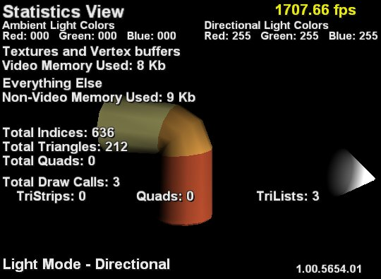

Statistics View mode displays statistics about the current model being viewed.

This view shows the current RGB values for both the ambient light and directional light sources. It displays the amount of video memory being used by textures and vertex buffers and the amount of memory being used by everything else, including index buffers, shaders, animation data, and the data used to construct the current scene. The view shows the number of indices, triangles, and quads for the model as well as the number of draw calls to render the model. It shows many of those calls used tri-lists, tri-strips, or quads.
Pushing the Back button displays the help screen for this view mode. Pushing the Back again will show the current model without any of the text regarding statistics. Pushing Back a final time restores the original view with the statistics.
Pushing the Start button resets the camera and light to their startup values. If animation data is present, it also resets the animation data.